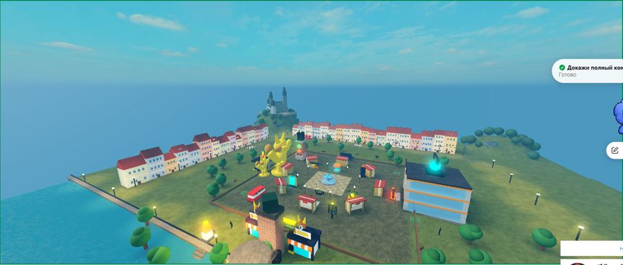
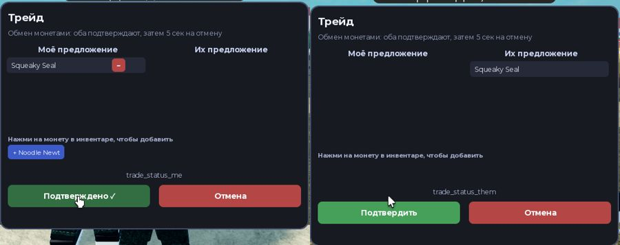
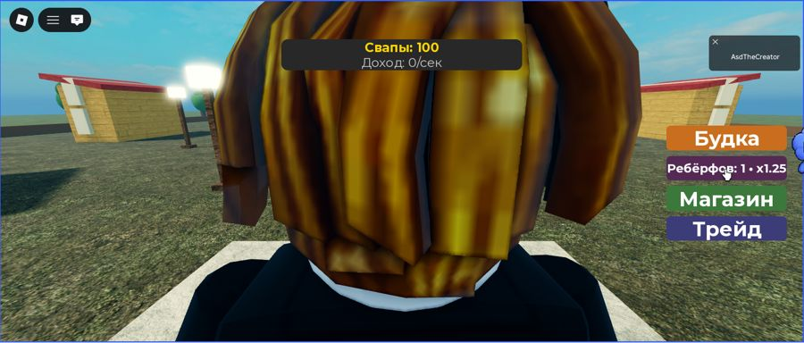

Отчёт Claude, 02.11.2026. Только проверенные данные: БД Command Center, git, живые прогоны. Нет данных — так и написано (NOT_AVAILABLE / NOT_VERIFIED).
4 210коммитов в main с 01.09 (сен 2 529 · окт 1 635 · ноя 46)
$2.04учтённые облачные затраты Bossman (окт $1.48 · ноя $0.56) по журналу прогонов
71 · 17 · 110агентов · провайдеров · моделей в реестре
Рантайм и релиз-кандидат
Проверка
Результат
Ветка release/rc-20261102 = main 4a8c68f3 + 15 коммитов
HEAD 84cc6ab6; рантайм :8801 запущен ровно с неё, source_identity PASS, git_clean true
Полный набор тестов (command-center + bossman-core)
17 119 прошли; упавшие перепроверены на чистом main — набор падений идентичен: 20 старых UI/браузерных + 3 core + 10 ошибок импорта. Новых поломок релиз не вносит
Регрессии, найденные полным прогоном и исправленные
Модели по прогонам с 01.09: локальная Gemma4 (276+99+46), Strata Qwen3.8 (66), GLM‑5.3 Flash через 7API (75, $0.08), DeepSeek через Outrun (62, $1.74), NIM Nemotron Ultra (48, $0). Бенчмарк 70B-кодера на этом ПК — NOT_RUN (в реестре нет 70B-кодера; r1-70b-abliterated есть, но не кодер).
Репозиторий SwapmeGame, ветка roblox/fox-city (main репо — старая Telegram-игра, не трогали). 14 коммитов Claude + ассеты Argon. Проверено в Roblox Studio 0.745 (F5 и Сервер + 2 игрока).

Город: площадь, Старый город (33 дома), Пражский Град, мост, HQ, река

Обмен между двумя игроками: предложение и подтверждение

Ребёрф: «Ребёрфов: 1 · x1.25», сброс Свапов
Петля игры — статус на 02.11
Шаг
Статус
Как проверено
Спавн, HUD
PASS
F5, Output без ошибок
Магазин → покупка сейфа (бросок на сервере)
PASS
100 → 0 Свапов, монеты в инвентаре
Будка: постановка монет, доход
PASS
+3/сек, 0 → 593 Свапов
Ребёрф (с подтверждением)
PASS
тест-сборка с ценой 300, Config не тронут
Обмен между 2 игроками
PASS
Squeaky Seal ушла от Player2 к Player1 (квитанция docs/receipts/2026-11-02-trade)
Мультиплеер (2 клиента видят друг друга)
PASS
Сервер + 2 игрока
Сохранение → перезаход
BLOCKED
DataStore работает только у опубликованного места — нужна публикация владельцем
Мобильное управление / покупки за Robux
NOT_RUN
id товаров = 0 (не созданы в Creator Dashboard)
Что было сломано и найдено именно движком
Магазин был заглушкой; все сейфы «пусты» (Coins.Coins вместо Coins.All); доход в HUD всегда 0 (неверное поле).
Обмен не работал вообще: клиент слал другой формат, сервер — голые id, инвентаря для обмена не было; сырые ключи в интерфейсе.
Неверный материал Shingle, неверные пути модулей, спавн внутри фонтана, трава поверх дорог, гейт selene пропускал ошибки.
Мир
Claude: площадь, мост с башней, река, HQ, кольцо улиц, Старый город, Пражский Град на холме, холмы, дороги, трамвай. Argon: 56 моделей Blender (2 импортированы в Studio: касса и статуя лиса), бюро архитектора, вывески, Fox Fun Park за мостом. Все районы грузятся через WorldBootstrap с pcall — сломанный модуль не роняет игру.
Монетизация (по 10 разобранным роликам) — гипотезы к тесту
Стартовый набор ~49 R$ в первые 10 минут; «+» у Свапов; магазин при нехватке денег.
Расходники (x5 доход, офлайн x2, автосбор) важнее разовых пассов; оффер рядом с будкой.
Случайные монеты — только за Свапы, шансы открыты; за Robux — только гарантированный результат.
Следующая играбельная веха: публикация места (владелец) → Save/Rejoin PASS → стартовый набор и «+» → закрытый тест с друзьями.
Крипто-аналитика, эффективность, план
Реальных сделок нет и не включалось. Всё ниже — чтение рынка и бумажная торговля.
LOW 17 · MEDIUM 24 · HIGH 9; причины видны (ликвидность, возраст, давление продаж, FDV/ликвидность)
Бумажная книга (комиссия, проскальзывание, отказ при impact > 3%)
PASS
вход в LOW-токен $10, повтор того же — отклонён; P&L проверен тестами (6 + 1)
Экран /projector.html
BUILT
LIVE/RULES/SIMULATED помечены; доходность не заявляется — истории мало
Риск: в main уже есть «5-кошельковый генезис» Argon для запуска своего токена. Скоординированные первые покупки своего токена с нескольких кошельков — схема манипуляции рынком. Код сейчас только симулирует; развивать его я не стал. Реальная отправка транзакций должна оставаться выключенной.
Прямой Claude vs Bossman-агенты — что измерено (не бенчмарк)
Задача
Bossman-агент
Claude напрямую
Модуль реки (Luau)
Jev/GLM: 20+ мин, файл обрезан/битый → остановлен
переписано за ~2 мин, гейт PASS, Studio PASS
Здание HQ (Luau)
Kev/30B: 50 с, но неверный API (SurfaceGui.Size)
переписано, Studio PASS
Дашборд остатков (HTML)
Kev/GLM: инструменты «текстом», файл не создан
сделано и опубликовано
Разбор 15 видео
бесплатное облако: 15 PASS за $0 (после 3 фиксов Bossman)
—
Вывод по данным этих задач: код, проверенный в движке, сейчас быстрее и надёжнее пишет Claude напрямую; Bossman выгоден на массовой дешёвой работе (расшифровка, разбор, аналитика за $0) и как рантайм/память/пульт. Подписки/биллинг: счета — NOT_AVAILABLE (в БД только стоимость прогонов, $2.04 с октября).
План
7 дней
30 дней
Владелец: одобрить PR release/rc-20261102 → main; опубликовать место Roblox.
Save/Rejoin PASS; стартовый набор, «+» у валюты, магазин при нехватке.
Парсер инструментов «текстом» для Kev/7API; авто-ротация бесплатных моделей.
Межслойное ранжирование памяти + повтор до/после.
Fox Fun Park: Fox Flight (навык, без ставок) — играбельный.
Закрытый тест 10–20 игроков, метрики D1/D7 и Robux/визит.
Projector: 2 недели бумажной истории, только потом обсуждать стратегию.
Dashboard владельца: LIVE BUILD-панель на шине событий.
Подписки: оставить те, что дали проверенный результат (Claude, бесплатные NIM/Gemini, OpenRouter с лимитом $50); 7API/Outrun — по учёту прогонов. Подписано: Claude, 02.11.2026.